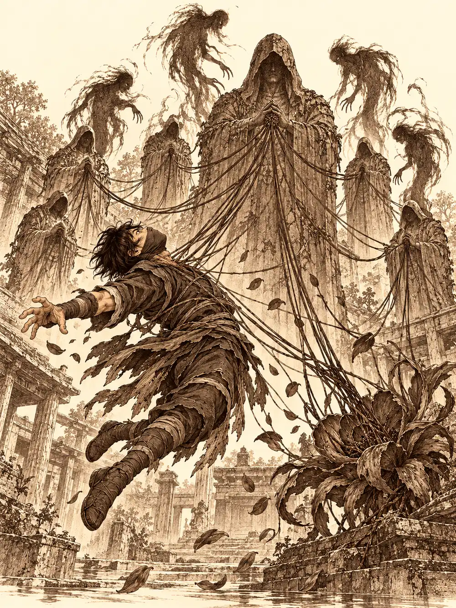

Capítulo 121
El monasterio perdido
Libro VIII · El hilo maldito
Atardecía cuando Banzo y Kurobane volvieron a la base. Arwen se les había escapado por el camino detrás de una polilla de cara rara, y dentro los esperaba Gur sentado en el suelo con las piernas cruzadas, mirando cómo Tip y Top se daban de bofetadas sin saber muy bien por qué. El medio orco les estaba susurrando cosas a la mente a los dos. En cuanto se levantó, los mujina dejaron de pegarse, se miraron y se abrazaron como si nada.
Guxi andaba recogiendo sus cosas por los rincones con cara de entierro. Ya no trabajaba para el shogunato, ni para nadie; el noble Yasuoka acababa de rechazarle su último invento, y el muchacho no sabía muy bien qué hacía allí. Kurobane se le acercó y le pidió ayuda.
"Voy a volver a casa. Al sur, a mi monasterio. Es peligroso".
Guxi suspiró, y fue el único suspiro de la tarde que sonó a sí.
Calista entró poco después. Tenía ojeras hondas y se movía como quien no ha dormido, pero sonrió al verlos y preguntó qué tal estaban, como si todo fuera bien. No iba bien. La noche anterior la matriarca había vuelto a buscarla en sueños. Calista había jugado a sus juegos con la cautela de una noble que sabe medir las palabras, y aun así la drow le había dejado una advertencia clara: a través de esa parte de su mente atrapada en la red podía arrebatarle recuerdos. Y se lo había demostrado. Calista ya no recordaba a sus padres. Banzo también había tenido su visita; la matrona le había preguntado otra vez por Gelbreak, él se había hecho el bárbaro simple que solo quiere pelear, y esa vez ella le había hecho una oferta. Él había elegido un camino. No contó cuál.
"Vais a partir ya", dijo Calista. "Si no os importa, quiero ir".
Kurobane necesitaba a alguien que supiera buscar entre libros y pergaminos, y aceptó. Gelbreak, que había entrado tras ella, le tiró al ninja unos papeles sobre la mesa: todo lo que había averiguado sobre aquel monasterio. Guxi ofreció su barco, aunque le quedaba poco combustible; la madera, el carbón y las piedras mágicas escaseaban como todo en aquella crisis. Gur, por su parte, recordó que le había llevado al herrero lo que había arrancado de los árboles de la cueva plateada junto con el hacha mellada, y que al hombre se le habían puesto los ojos como platos. Ahora llevaba días buscando a su sensei, el demonio pequeño, sin rastro de él.
Fueron en barco hasta Ukio y desde allí cruzaron el único portal que todavía funcionaba, el que llevaba al campamento del sur. Los soldados tenían la mirada gastada de quien lleva demasiado tiempo esperando refuerzos.
Llovía. Kurobane caminaba delante con la cara levantada hacia el agua y la máscara empapada. Gelbreak lo alcanzó.
"Has liado a cinco de nosotros para ayudarte, ¿y no les vas a contar nada de lo que he leído para ti? Nos llevas a una misión suicida".
El ninja se detuvo. Cuando habló, la voz se le quebraba.
"El monasterio funcionaba aparte, no como vosotros. Usábamos nuestras habilidades para proteger el sur de las acometidas de Otakemaru. Mi maestro era quien portaba el poder que yo llevo ahora. Murió en el ataque al templo, y como el receptáculo más cercano era yo, entró en mí". Se señaló la cabeza. "No solo soy Kurobane. Tengo a otro aquí dentro. Su nombre en la orden es Osuray, uno de los siete maestros legendarios. Cuando mis ojos se vuelven negros, es él quien toma el control".
Gur dedujo, con su lógica particular, que el muchacho llevaba un muerto dentro. Calista no dijo nada. Kurobane se quitó el guante de la mano derecha y les enseñó la piel: estaba cubierta de pequeñas llagas y cicatrices, una por cada compañero caído aquel día. Eso se lo hacía él, para recordar. La oscuridad del otro brazo era otra cosa. El ser que llevaba dentro no estaba muy por la labor de unirse a ellos; estaba furioso porque el muchacho no terminaba su venganza contra el demonio que había matado a todos los suyos.
"Bueno, espero que no escondamos más secretos", dijo Gelbreak, y le dio unas palmaditas. "Adelante, guíanos".
Su base quedaba de camino. Kurobane subió a ella con una agilidad que nadie pudo seguir, y desde abajo oyeron un largo suspiro de alivio: la Biblia seguía allí, envuelta. Sus compañeros lo convencieron de no dejarla sola. Gelbreak abrió la bolsa de contención para meterla dentro y Calista lo frenó a tiempo; aquel libro se tragaba la magia, y meterlo en una bolsa mágica era buscarse una desgracia. Al final se lo quedó Gur, que era el que menos dependía de los hechizos, aunque ya sabía lo que dolía tocarlo. Lo guardó en la mochila. Kurobane, sin que nadie lo viera, se llevó además un pequeño cuaderno y se lo metió bajo la capa.
Las escaleras del monasterio subían por la montaña de piedra hasta perderse en la penumbra. Arriba, una muralla y unas grandes puertas negras, rasgadas, chamuscadas, con pintadas de los sectarios. Dentro, columnas manchadas, antorchas muertas, telarañas viejas y un olor a cosa podrida que no se iba. Era de noche y la luna alumbraba el patio.
Cada paso que daba Kurobane era un recuerdo: los entrenamientos rigurosos, el golpe de la vara por cada error. Banzo le preguntó si estaba bien.
"No. Volver a casa es complicado. Desde aquel día mis ojos lo reflejan. Siempre que me habéis visto, han reflejado ese día".
Se repartieron. Kurobane y Guxi entraron en la habitación del maestro. Los sectarios la habían arrasado; había muebles destrozados y, por el suelo, huesos y cadáveres ya descompuestos. Kurobane rescató un par de libros del polvo y los guardó. Guxi, revolviendo el escritorio mientras hablaban, golpeó con los dedos algo metálico al fondo de un cajón. Lo desencajó y cayó una pequeña llave oxidada.
"Es del maestro", dijo Kurobane cuando se la enseñó. "Hay muchas salas cerradas con llave en este lugar. Y al no quedar nadie, según las reglas del monasterio, el jefe sería yo". Le hizo un gesto para que se la quedara.
Allí dentro, al pie del templo, los que estaban cerca vieron por primera vez un hilo que le salía de la nuca y se perdía en dirección al patio. Él lo sabía: estaba unido por un pacto con el ser. A cambio le había dado la capacidad de infiltrarse, de volverse uno con la oscuridad y de ver en ella.
Gur no se molestó en buscar puertas. Vio un hueco con agua y se tiró de cabeza con el martillo, nadando hasta salir al otro lado chorreando. Calista dio a Banzo y a Gelbreak el don de caminar sobre el agua y lo siguieron por encima. El patio era enorme. En el centro había una gran flor negra, medio chamuscada, con pétalos caídos alrededor, y detrás, siete estatuas de figuras encapuchadas con los brazos cruzados. Se parecían mucho entre sí; solo las distinguían detalles mínimos, una luna llena en una capa, una luna menguante en otra.
Calista se acercó demasiado. Un pétalo le rozó la piel y se desplomó dormida sobre el agua. Gelbreak corrió, la sacó en brazos y se sentó a su lado para vigilarla mientras los demás seguían.
"Déjala, que descanse", dijo el drow. "Seguid vosotros. Me ocupo yo de ella".
Por los pasillos se arrastraban algunos muertos. Gur y Banzo preguntaron antes a Kurobane si quería conservarlos, y cuando dijo que no, los despacharon.
Cuando Kurobane salió al patio, se quedó mirando las estatuas.
"Son los anteriores portadores del poder. Si hubiera acabado con Otakemaru, o al menos retrasado su salida, habría una más. Yo sería el octavo".
En la biblioteca casi todo estaba chamuscado y roto, pero Kurobane encontró pergaminos con anotaciones sobre los antiguos maestros y las batallas de cada receptáculo contra el demonio. Les faltaban trozos; alguien con buen pulso tendría que reconstruirlos. Guxi dio con un libro de historia del templo que hablaba de un ataque de Otakemaru de hacía mil años; el libro no era tan antiguo, solo lo era lo que contaba.
"Espero que terminemos esta lucha de una vez", murmuró, y se lo llevó.
Gur, que buscaba cosas de colores, encontró en la mesilla de uno de los monjes más cercanos al maestro un cuaderno hecho a mano, con dibujos coloreados de muñecos de palo en posturas de entrenamiento. Cuando Guxi y Kurobane se volvieron, el medio orco tenía una pierna sobre la mesa, el libro abierto en una mano y la otra agarrada a una balda alta, con la cabeza ladeada. Poco después oyeron un estruendo. Encontraron a Gur en el suelo bajo dos estanterías caídas, con el libro abierto sobre la cara.
"Es que aquí hay posturas de monje, pero son complicadas".

Donde había estado la estantería se abría un hueco de un palmo en la pared. Dentro había un diario fino, de letras gastadas. Kurobane le quitó el polvo y lo abrió. Era de su maestro. Pasó páginas buscando, y en una de ellas leyó que un día habían encontrado a un niño en el antiguo pueblo. Cerró el libro de golpe y lo guardó. Lo leería a solas.
Al salir al patio, Kurobane gritó.
Algo tiró de él desde la nuca con tanta fuerza que lo levantó del suelo. Lo oyeron todos, cada vez más alto, mientras lo arrastraba por el aire hacia la estatua central. Ahora sí veían todos el hilo. Y vieron también cómo se multiplicaba: de Kurobane salieron hebras hacia las estatuas de los lados, hacia las seis de atrás y hacia la flor, y de cada una empezaron a brotar sombras.
"¡Es mi ninja!", bramó Gur desde la puerta.
Kurobane alzó el estoque y su brazo izquierdo se volvió negro de los dedos al hombro. Usó el propio tirón del hilo para atravesar a una de las sombras y salir girando como un tirabuzón, golpeando otra vez. De la flor surgió una sombra mayor, hecha de pétalos, que chilló hasta que los pétalos se pudrieron y ennegrecieron, y la onda alcanzó a todos. Gur arrojó una bola de fuego que estalló en el centro del patio. Guxi desplegó sus torretas y llenó de rapidez a sus compañeros. Calista despertó y volvió a la pelea con el abanico en una mano y la magia en la otra. Banzo y Gur ensayaron por fin la maniobra que tanto habían practicado: el goliat clavó el arpón, Gur se agarró al cabo, Banzo tiró con todas sus fuerzas y lanzó por el aire al medio orco, que soltó el arpón en pleno vuelo, sacó el martillo y cayó sobre una sombra hasta hacerla estallar.
Pero las sombras herían de una manera extraña. Cada golpe que daban a Kurobane le arrancaba fuerza del cuerpo, y el muchacho colgaba cada vez más débil. Las vencieron una a una. El hilo, en cambio, seguía tirando.
Calista levantó un viento que lo empujó hacia fuera. La estatua respondió tirando con más fuerza, y el ninja volvió hacia ella. Banzo golpeó la piedra y la estatua empezó a agrietarse, y cuanto más se rompía, más crecía alrededor de Kurobane un aura negra que le salía del brazo izquierdo. Tenía los ojos completamente blancos, como si ya no estuviera allí.
"¡Cortadlo!", gritó Calista.
Entonces Gelbreak pasó junto a ella, murmurando palabras de magia, cruzó por delante de Banzo y de Kurobane, y desintegró la estatua.
Detrás, entre las demás figuras de piedra, se levantó un humo con forma humana que siguió el hilo como un perro sigue un rastro y entró en Kurobane. Una oscuridad pequeña y espesa lo envolvió. De dentro salió una voz muy grave que Calista reconoció.
"Ese al que llamáis Kurobane ya no está con vosotros".
Banzo se metió a tientas en la negrura hasta encontrar un brazo. El brazo se levantó y señaló hacia fuera, hacia donde estaba Calista; dos ojos totalmente negros brillaron en la oscuridad.
"Me debería presentar, aunque usted ya me conoció aquel día".
"Banzo", dijo Guxi, "a la de tres golpéalo lo más fuerte que puedas. Que quede inconsciente".
Guxi deshizo la rapidez que le había dado a Kurobane y el cuerpo se quedó un instante torpe, atontado. Banzo lo sacó a rastras de la oscuridad. Gur le arrojó el martillo a la cara. Banzo lo recogió del suelo y siguió golpeando, midiendo la fuerza para no matarlo, hasta que el ninja se desplomó.
Dentro de aquella cabeza, donde nadie de los que estaban fuera podía verlo, una figura de sombra cogió a Kurobane como Gur había cogido a los muertos un rato antes.
Creo que este cuerpo, por ahora, es mío.
Lo metió en una celda y cerró con llave.
Fuera solo había un muchacho tendido en el suelo, respirando. Calista se arrodilló a su lado. Estaba agotada, pálida, y la magia apenas le alcanzó para cerrarle algunas heridas.
"Esto es un problema", dijo. "Deberíamos retenerlo en la base".
Guxi se lo echó a la espalda y salió volando hacia el campamento del sur, a diez minutos de allí. Gelbreak se encogió de hombros, tocó a los demás y los llevó a todos de vuelta a Sho. Detrás quedaron el templo destrozado y la estatua hecha polvo. Antes de desaparecer, Banzo le devolvió a Gur el martillo, y el medio orco le dijo que aquello de pasarse las armas había estado bien, pero que tenía que practicar, que se le caían mucho.
Días después, los portales seguían rotos y Danifae entró en la base resoplando, con los pies doloridos de haber subido andando desde el sur. Archi, que trabajaba sobre la mesa con las gafas levantadas, la saludó con una reverencia y le señaló la habitación que había usado Gelbreak. De allí salían voces.
Danifae abrió la puerta despacio. Dentro estaban Guxi, Gur y Banzo, de pie, delante de Kurobane, encadenado de pies y manos y mirando fijamente al frente. La poca luz que llegaba a su cuerpo desaparecía en él como en un pozo. Banzo llevaba al cuello un collar de ajos, unas plumas de pájaro en la cabeza y varios collares de huesos enrollados en las manos, como un rosario.
"Yo creo que deberíamos llamar a un exorcista", estaba diciendo, "o a un chamán".
La drow se agachó delante del prisionero y lo examinó con una sonrisa.
"Tú no eres Kurobane, ¿verdad?".
El cuerpo se rio y negó con la cabeza. Banzo le gritó que no se riera.
"Ese niño está muy lejos ahora mismo. Encerrado", dijo la voz. "Perdí mi nombre hace milenios. Podéis llamarme Osuray. Él ha sido mi receptáculo, como todos los anteriores".
Banzo cerró el puño y lo echó atrás. No golpeó. Salió del cuarto gruñendo a tirar piedras contra un árbol hasta que se le pasó.
Osuray contó, con los ojos negros clavados en la drow, que el grandote había destruido parte de la estatua en la que lo habían sellado y que alguien muy parecido a ella había terminado el trabajo.
"¿Un poco más alto que yo, armadura negra, estoque?", preguntó Danifae, con un dedo en los labios. "Mi hermanito. Es un poco bobo. Siempre anda haciendo de las suyas".
"Su hermano terminó de liberarme y de 'matar' a este niño", dijo Osuray, haciendo las comillas con los dedos.
Habló de siglos de lucha contra el demonio, de cómo había visto morir a todos los suyos delante de él, de la promesa de venganza que lo había llevado a las sombras. Aquel era su octavo cuerpo. Banzo, que había vuelto ya más calmado, le preguntó por qué no trabajaba junto al muchacho si los dos buscaban lo mismo.
"Se estaba desviando de su misión", contestó la sombra, molesta. "Por esa chica venida del mar".
A Danifae se le dibujó en la cara una sonrisa horrible. Preguntó si el niño podía oírlos, y Osuray dijo que sí, que eso no importaba. A ella le importaba mucho. Se acercó a su oído y le susurró algo que nadie más oyó, algo sobre la tritón. Osuray soltó una carcajada que llenó la habitación.
Dentro, en su celda, Kurobane gritaba que era mentira, que seguro que era mentira, que ella mentía. Fuera no se oía nada de eso.
"El niño dice que mientes", dijo Osuray, enseñando unos dientes que parecían de tiburón. "Pero yo sé que no".
Banzo insistió. Ya había fallado una vez contra el demonio; ahora eran más y más fuertes. Que adiestrara al chico. Si se desviaba, él mismo lo pondría en su sitio. Osuray puso los ojos en blanco y dio su brazo a torcer: lo entrenaría, y el entrenamiento sería un infierno. Pero el muchacho no volvería del todo. Al romper el sello, él ya no podía descansar en paz; como mucho, le dejaría vivir su vida a ratos. Banzo le preguntó si se iría cuando cayera Otakemaru, y la sombra no lo prometió.
"En mis tiempos estas cosas se cerraban con un papel firmado por las dos partes".
"Los cazadores tienen un contrato mágico que os vincula", sugirió Danifae, levantándose. "Podríais hacerle uno y tenerlo vigilado".
Banzo asintió: lo consultaría. Danifae se marchó hacia el sur con una disculpa burlona para el pequeño acompañante.
Guxi había pasado todo el rato en un rincón, con la mirada perdida.
"Así que Osuray. Solo veo a un cobarde que huye hasta de la muerte".
"Es difícil hacer algo por uno mismo cuando te convierten en un ser sin cuerpo", contestó la sombra.
"Excusas. Kurobane, si me escuchas, volveré a por ti. Aguanta". Le tiró las llaves de los grilletes a Banzo. "Encárgate de él. Yo tengo que encargarme de alguien".
Salió sin volverse. Osuray miró al goliat de arriba abajo, sonriendo.
"Ahora quedamos tú y yo".
Banzo le dijo que se quedaría allí mientras buscaba a quien redactara el contrato. Antes de cerrar la puerta se volvió hacia aquellos ojos negros, buscando detrás de ellos al muchacho encadenado.
"No estás solo, Kuro".